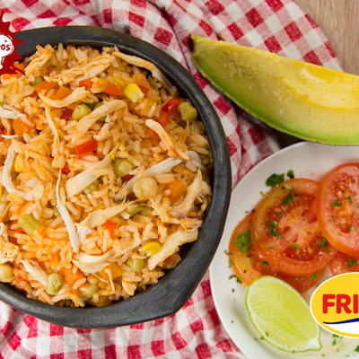
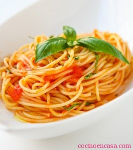
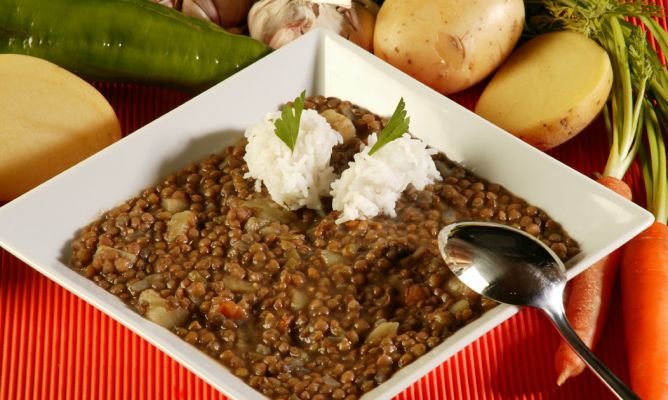

¿No sabes a cuál restaurante de la ciudad vas invitar a tu pareja el próximo fin de semana?, ¿necesitas preparar algo de comer con lo que tienes en la nevera? ¿Quieres aprender sobre recetas y trucos de cocina? Estás en el lugar indicado. No importa cuales sean tus gustos a la hora de la comer, tenemos informacón para cada uno, descubre todo lo relacionado con la gastronimía y ¡Bienvenido! prepárate para disfrutar de los mejores Restaurantes de la ciudad de cali
Aqui en nuestro restautante delicias culinarias podras encontrar algunos platos tipicos de colombias y el mundo.En este establecimiemto puedes comprar los mas ricos y delicios platos.En el restaurante delicias culinarias, disfrute de la comida internacional, entradas especiales, parrilla, jugos naturales, preparaciones en horno de leña, sushi y cocteles y vinos .
Mira esta deliciosa receta de Arroz con , pollo colombiano. Atrévete a cocinar este arroz con pollo ... Ingredientes 1 Pechuga de Pollo Friko 1 zanahoria en cuadros grandes 2 tallos apio en cuadros grandes 1 cebolla blanca en cuadros grandes 2 dientes ajo aplastados
Valor $25.000
Ingredientes 250 Gramos de Espaguetis 3 Tomates maduros 1 Cebolla cabezona 2 Tallos de cebolla larga 1 Huevo cocido 4 Salchichas Rancheras o Jamón Serrano Salsa de Tomate Achiote o Color Margarina o Mantequilla
Valor $49.999
Ingredientes 400 gr. de lentejas 1 cebolla 1 pimiento verde 2 zanahorias 2 patatas medianas
Valor $12.000